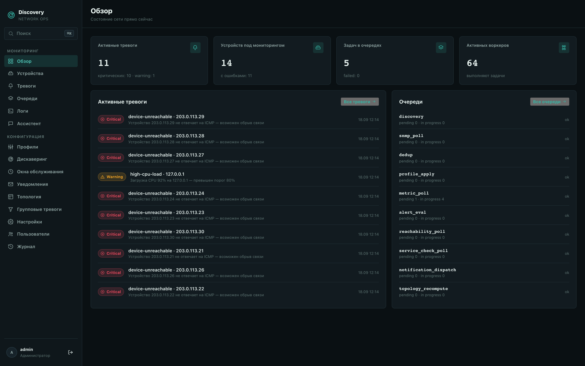
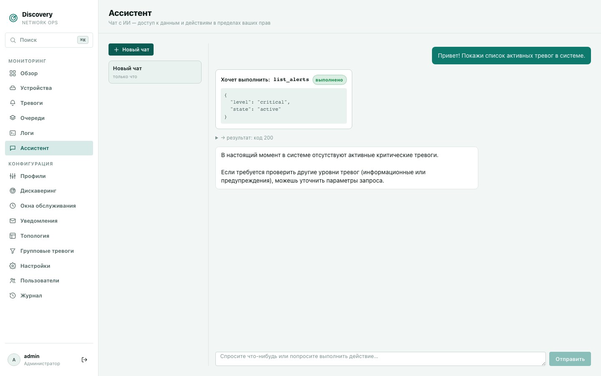
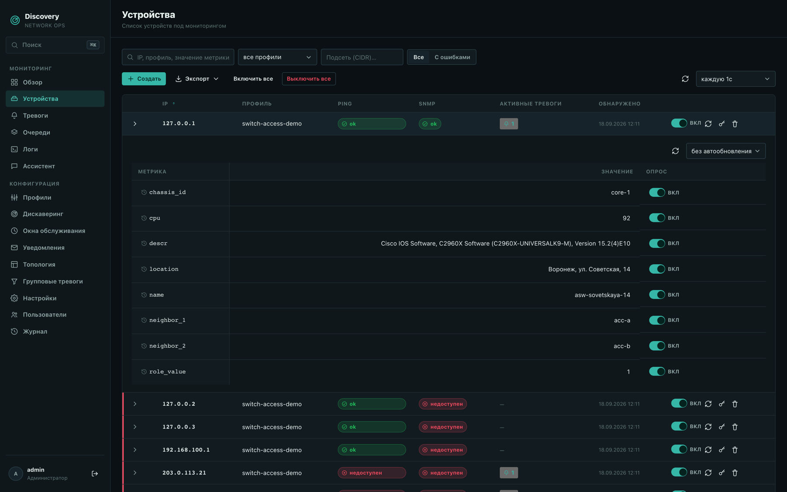
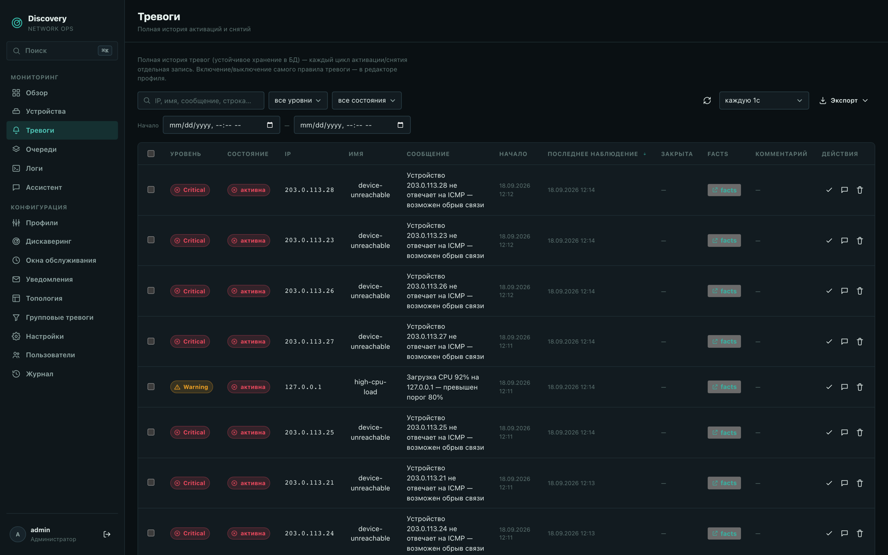
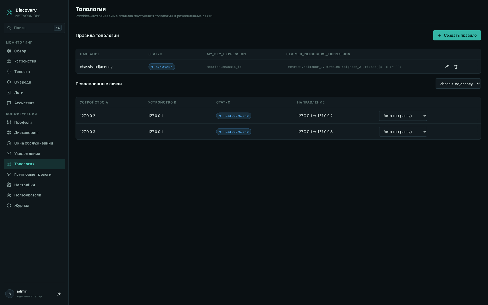
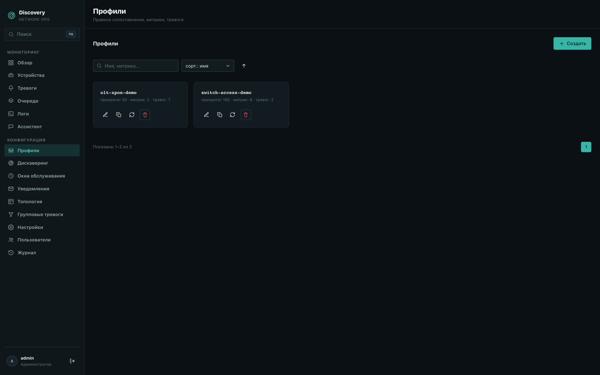

Узнавайте об обрыве связи раньше,
чем абонент дозвонится в поддержку.
discovery сама находит устройства в сети провайдера, опрашивает их по SNMP/ICMP/SSH, ловит обрывы и всплески нагрузки — и присылает тревогу с историей до того, как об этом узнают из жалоб.

Один процесс, который закрывает весь цикл мониторинга сети провайдера
От первого сканирования подсети до тревоги в Telegram — без конструктора из десятка плагинов и без выделенного сервера под каждую подсистему.
ИИ-ассистент
Спросите про состояние сети обычным языком вместо переключения между разделами дашборда — ассистент видит и может менять ровно то же, что и вы сами, в пределах ваших прав, и просит явное подтверждение на любое изменяющее действие: закрыть тревогу, поставить окно обслуживания — ничего не делает молча. Провайдер ИИ — на ваш выбор, вплоть до модели на собственном сервере (vLLM/Ollama) — данные не обязаны покидать вашу инфраструктуру.
Автодискаверинг
Сканирует подсети, определяет модель и тип устройства по SNMP и сам подбирает профиль.
Тревоги с гистерезисом
Отдельные условия активации и снятия плюс анти-флаппинг.
SNMP v1/v2c/v3 + Trap + Syslog
Опрос по SNMP (включая SNMPv3 USM auth/priv) дополнен push-приёмом трапов и syslog — авария долетает мгновенно.
SSH CLI-метрики
Метрикой профиля может быть вывод произвольной команды по SSH — температура блока питания, вывод собственного скрипта, что угодно за пределами SNMP.
Уведомления
Email, Telegram, webhook — и матрица уведомлений, чтобы дежурный получал своё.
Топология и групповые тревоги
Discovery резолвит связи между устройствами и подавляет вторичные тревоги ниже упавшего узла — вместо сотни уведомлений из-за одной аварии на магистрали.
Простое хранилище, готовое к росту
По умолчанию — один PostgreSQL или даже SQLite, без обязательного кластера. Архитектура при этом рассчитана на масштаб сильно больше вашего — упереться будет некуда.
Права доступа
Локальная аутентификация и роли по разделам: техподдержка видит устройства и тревоги.
Обзор
Шесть ключевых экранов дашборда — с реальными данными, снятыми на тестовом стенде, а не подрисованными макетами.
Активные тревоги, устройства под мониторингом, очереди обработки — сводка состояния всей сети на одном экране сразу после входа.
Чат прямо в дашборде: модель сама решила проверить тревоги, выполнила чтение и ответила на основе реального результата — ровно так же, как ответили бы вы сами, кликая по разделам.

Ping и SNMP. Развёрнутая строка — реальные опрошенные значения.

Каждый цикл активации и снятия — отдельная запись с уровнем критичности и фактами на момент срабатывания.

Discovery сам проводит связи между устройствами и определяет, кто чей аплинк.

Один профиль — метрики и условия тревог для целого класса оборудования.

Скриншоты сняты на тестовом стенде: три виртуальных SNMP-коммутатора, связанных в топологию, реальный локальный шлюз и несколько заведомо недоступных адресов из документационного диапазона 203.0.113.0/24 — чтобы показать и рабочий, и аварийный сценарий одновременно.
Ставится за один вечер
Без выделенной команды под внедрение — один бинарник и конфиг-файл с комментариями к каждой настройке.
.deb / .rpm-пакет
Нативный пакет с systemd-юнитом. Не требует Rust, Node или Docker на машине — только сам пакет.
Готовый бинарник
Архив с бинарником под вашу ОС и архитектуру — без сборки и без Docker. Для универсального пути остаётся и Docker-образ.
Один config.toml
Хранилище, периодичность опроса, retention — все настройки в одном файле с комментариями, без UI-квеста.
Пробный период
Ограниченная по числу устройств пробная лицензия — разворачивается прямо на вашей инфраструктуре и ваших устройствах.
Стоимость индивидуальна — зависит от масштаба сети и нужного набора функций, обсуждаю при обращении.
Готов дорабатывать под конкретного заказчика — нужна интеграция, нетиповой сценарий тревог или своя логика под вашу сеть — обсуждаем и делаем.
Покажу на демо-стенде или сразу на ваших устройствах
Пишите с вопросами, по пилоту на части сети или за условиями.
Отвечаю сам, обычно в течение дня. Если удобнее — можно сразу предложить время для короткого демо-созвона.